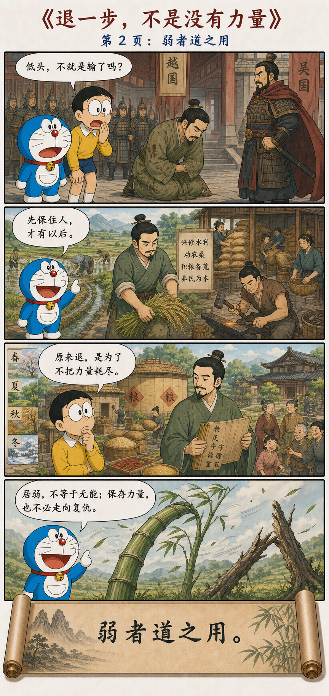
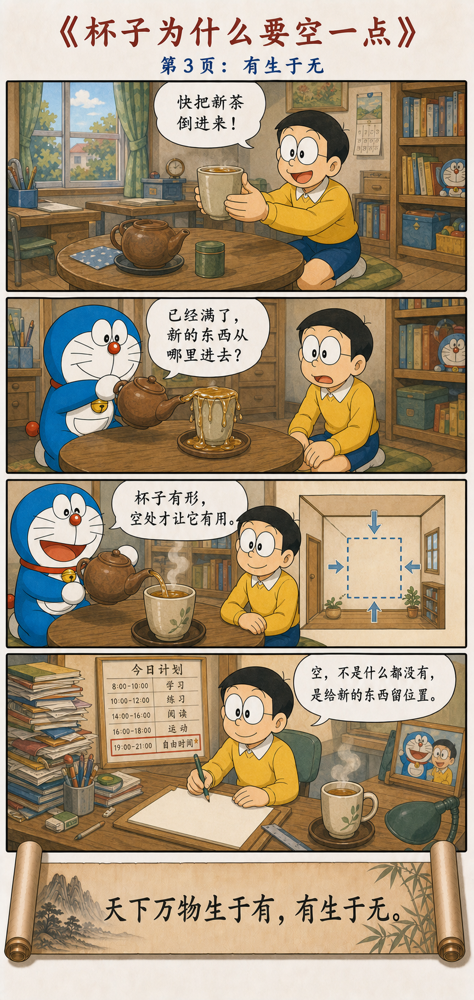

极短，却足以打开整个世界
A Few Words That Open an Entire World
反者道之动，弱者道之用。
天下万物生于有，有生于无。
Reversal is the movement of the Dao; yielding is the way the Dao works. All things under heaven are born of being; being is born of non-being.
道怎样运动，又怎样发挥作用
How the Dao Moves and How It Works
道的运动，并不是永远沿着一个方向冲下去。事物走远了会返回，发展到一端会转向另一端；道发挥作用的方式，也不是一味刚强，而是柔弱、谦下、保留余地。
The Dao does not rush forever in a single direction. What travels far returns; what reaches one extreme turns toward the other. Nor does the Dao work through hardness alone, but through flexibility, humility, and room to change.
天下具体的万物，从已经存在的条件中生长；而一切具体存在的背后，又需要未被占满的空间、尚未定形的可能，以及看不见却使事物成立的秩序。
Concrete things grow from conditions that already exist. Yet behind every formed thing lie unoccupied space, possibilities not yet fixed, and an unseen order that allows the thing to take shape.
世界不是一条只进不退的直线
The World Is Not a Line That Only Moves Forward
我们很容易把发展想象成一条不断上升的直线：更多、更快、更强、更高。老子看到的却是另一种运动：生长会进入强盛，强盛会带来消耗，消耗要求休息，休息又为下一次生长积蓄条件。
We readily imagine development as a line that rises without end: more, faster, stronger, higher. Laozi sees another movement. Growth enters fullness, fullness produces exhaustion, exhaustion calls for rest, and rest gathers the conditions for growth to begin again.
“反”既可以理解为返回，也包含反转。它不保证我们知道转折会在什么时候到来，却提醒我们：任何局部状态都不会无限延续，越接近极端，维持它的代价往往越大。
“Reversal” can mean both returning and turning into an opposite. It does not tell us exactly when a turn will occur. It reminds us that no local condition continues without limit, and that the closer something comes to an extreme, the more costly it often becomes to maintain.
道不是一支只向前飞的箭，
更像一个知道何时返回的圆。
The Dao is not an arrow that only flies forward. It is closer to a circle that knows how to return.
一匹马、一次退让与一只空杯
A Horse, a Retreat, and an Empty Cup



不要在故事中间，急着写下结局
Do Not Write the Ending in the Middle of the Story
边塞老人的马跑了，邻人来安慰，他却问：怎么知道这不是福呢？后来马带着别的马回来，众人来祝贺，他又问：怎么知道这不是祸呢？儿子骑马受伤，却又因此免于征战。
When an old frontier man’s horse ran away, his neighbors came to console him. He asked how they knew it was not fortunate. The horse later returned with other horses, and when people congratulated him, he asked how they knew it was not trouble. His son was then injured while riding, yet the injury later kept him from war.
这个故事不是一张保证书，不是在说“坏事一定会自动变好”。它真正改变的是判断的尺度：眼前的一幕，只是更长过程中的一个节点。事情尚未走完时，不必把一次得失扩张成对全部人生的判决。
The story is not a guarantee that every bad event will automatically become good. It changes the scale of judgment. What appears before us is only one point in a longer process. While events are still unfolding, one gain or loss need not become a verdict on an entire life.
知道趋势有边界，不等于故意走向反面
Knowing That Trends Have Limits Does Not Mean Opposing Everything
“反者道之动”不是鼓励人凡事唱反调，也不是让人看到上涨就立刻做空、看到成功就预言失败。反转需要条件；我们通常只能知道趋势不可能无限持续，却不能仅凭一句古语判断具体的转折时点。
“Reversal is the movement of the Dao” does not encourage reflexive opposition, shorting every rise, or predicting failure whenever success appears. Reversal requires conditions. We may know that a trend cannot continue without limit, but an ancient saying alone cannot reveal the exact moment of its turn.
它教给人的不是神奇预测，而是一种分寸感：上升时不把增长当作永恒，低谷时不把困境当作终局，行动时也为修正和返回保留通道。
What it offers is not magical prediction but a sense of proportion: do not treat growth as eternal while rising, do not treat hardship as final while falling, and always leave a path for correction and return.
真正的弱，是保留改变姿态的能力
True Yielding Preserves the Ability to Change Form
坚硬的枯枝只能维持一种姿态，风一大便可能折断；竹子会弯，看起来退让，却能在风停以后重新站起。这里的“弱”不是没有力量，而是不把全部力量一次用尽。
A dry branch can maintain only one posture and may snap in a strong wind. Bamboo bends and appears to yield, yet stands again when the wind passes. This “weakness” is not the absence of strength, but the refusal to spend all strength at once.
一个人能承认暂时不知道，思想才有修正的余地；一个组织能降低过度控制，成员才有主动生长的空间；一次冲突中不急于证明强硬，也可能避免双方被拖入无法收拾的消耗。
A person who can admit not knowing leaves thought open to correction. An organization that loosens excessive control gives its members room to grow. In conflict, declining to display toughness immediately may keep both sides from entering ruinous exhaustion.
先保住人，才有以后
Preserve the People First, and There Can Be a Future
勾践的故事常被讲成卧薪尝胆和最终复仇，但若只看胜负，很容易错过中间最重要的部分：战败以后接受弱势位置，让百姓休息、恢复生产、积累粮食，并把已经濒临耗尽的国家重新组织起来。
The story of Goujian is often told as hardship followed by revenge. Yet if we look only at victory and defeat, we miss its crucial middle: accepting a weaker position after defeat, allowing the people to recover, restoring production, storing grain, and reorganizing a state close to exhaustion.
暂时居弱，可以是为了保存未来行动的条件。但这里需要停住一步：如果保存力量只是为了制造更大的报复，那么“弱”仍然被“强”的欲望支配。更深的理解，是让退让减少损耗、恢复生命，而不是把柔弱变成延迟爆发的刚强。
Temporarily taking the weaker position can preserve the conditions for future action. But one more distinction matters: if strength is preserved only for greater revenge, yielding remains ruled by the desire for force. A deeper reading lets retreat reduce damage and restore life, rather than turning softness into hardness waiting to explode.
判断力量，不只看姿态是否强硬
Judge Strength by More Than the Appearance of Toughness
柔弱不等于没有原则，退一步也不等于把决定权全部交出去。有时必须坚持边界，有时必须立即行动。关键不在于动作看起来软还是硬，而在于它是否真正保护了生命、关系和继续行动的能力。
Yielding does not mean having no principles, and stepping back does not mean surrendering every decision. Sometimes boundaries must be held and action taken immediately. The question is not whether an action looks soft or hard, but whether it protects life, relationships, and the capacity to continue acting.
有让事物显现，无让事物发生
Being Makes Things Visible; Non-being Lets Them Happen
杯子必须有杯壁，才能盛水；但真正容纳水的，是杯壁围出的空处。房屋需要墙和屋顶才能成立，可人能够居住、走动和生活，依靠的仍是其中没有被材料填满的空间。
A cup needs walls in order to hold water, yet water is received by the open space those walls surround. A house requires walls and a roof, but people live and move through the space not filled by building material.
因此，“有”和“无”不是简单的存在与不存在。形状、材料和制度属于“有”；容量、间隔和可能性接近“无”。有给事物边界，无给事物用处，两者共同使世界得以运转。
“Being” and “non-being” are therefore not merely existence and nonexistence. Shape, material, and institutions belong to being; capacity, intervals, and possibility approach non-being. Being gives boundaries, non-being gives use, and together they allow the world to work.
已经装满，新的东西从哪里进去
If the Cup Is Full, Where Can Anything New Enter?
大雄拿着一只已经盛满的杯子，还催哆啦A梦继续倒入新茶。茶水立刻溢了出来。问题不在茶不够好，也不在杯子不够漂亮，而在杯中已经没有接纳新东西的位置。
Nobita holds a cup already filled to the brim and urges Doraemon to pour in new tea. It spills at once. The problem is neither the quality of the tea nor the beauty of the cup, but the absence of room to receive anything new.
一个人如果被旧答案塞满，新的经验只能被挡在外面；日程如果排得密不透风，思考便失去生长的时间；领导如果把每个决定都替别人做好，团队也很难产生真正的主动性。
When a person is filled with old answers, new experience remains outside. When a schedule has no opening, thought loses time to grow. When a leader makes every decision for others, a team struggles to develop genuine initiative.
空，不是什么都没有，
而是新的东西还可以进来。
Emptiness is not simply nothing. It means something new may still enter.
返回、柔弱与留白，都是为了继续生长
Return, Yielding, and Open Space All Make Further Growth Possible
面对成功，不必把一次上升当作永恒趋势；面对低谷，也不必用眼前困难给整个人生盖棺定论。先观察过程走到了哪里，再决定继续、减速、返回还是改变方向。
In success, do not treat one rise as an eternal trend. In hardship, do not let present difficulty pronounce a final judgment on life. Observe where the process has reached, then decide whether to continue, slow down, return, or change direction.
面对冲突，不是每一次刺激都需要立即正面碰撞；面对创造，也不必把“不知道”视为耻辱。能够暂停、倾听和暂时没有答案，常常正是在保护下一步真正发生的条件。
In conflict, not every provocation requires immediate collision. In creation, not knowing need not be shameful. The ability to pause, listen, and remain without an answer often protects the very conditions from which the next step can emerge.
老子不是在许诺自动反转
Laozi Is Not Promising Automatic Reversal
失败不会因为我们什么都不做就必然变成成功，柔弱也不会自动战胜一切刚强，空白更不会自己产生作品。返回需要判断，柔弱需要方向，留白之后仍然需要真实的行动。
Failure does not inevitably become success merely because we do nothing. Yielding does not automatically defeat every form of hardness, and a blank space does not create a work by itself. Return requires judgment, flexibility requires direction, and open space must still be followed by real action.
这一章真正反对的，是把某个局部状态绝对化：认为上升只会继续上升，力量只能表现为强硬，存在只能依靠不断增加。老子在每一种确定性旁边，都重新打开一条返回和变化的通道。
The chapter resists turning a local condition into an absolute: assuming that a rise must keep rising, that strength can appear only as hardness, or that existence depends only on adding more. Beside every certainty, Laozi reopens a path of return and change.
走得远时知道返回，拥有之中仍留一点空
Know How to Return, and Leave Some Emptiness Within What You Possess
世界真正长久的运动，不是永远保持一种速度和姿态，而是在盛衰、进退、有无之间不断调整。能够返回，力量才不至于耗尽；能够柔弱，生命才保有弹性；能够留下空处，新的事物才有发生的地方。
The world endures not by preserving one speed and posture forever, but by adjusting among fullness and decline, advance and retreat, being and non-being. Return prevents strength from being exhausted, yielding preserves the flexibility of life, and emptiness gives the new somewhere to arise.
不把眼前当作永恒，
不把强硬当作力量的全部，
不把填满当作拥有的终点。
Do not mistake the present for eternity, hardness for the whole of strength, or fullness for the final form of possession.
原典与故事出处
Primary Text and Story Sources
The Wang Bi edition and commentary on the Daodejing, and the Chinese Text Project edition of the text.
“The Old Man at the Frontier Loses His Horse” in the Huainanzi, and “The Hereditary House of King Goujian of Yue” in the Records of the Grand Historian.